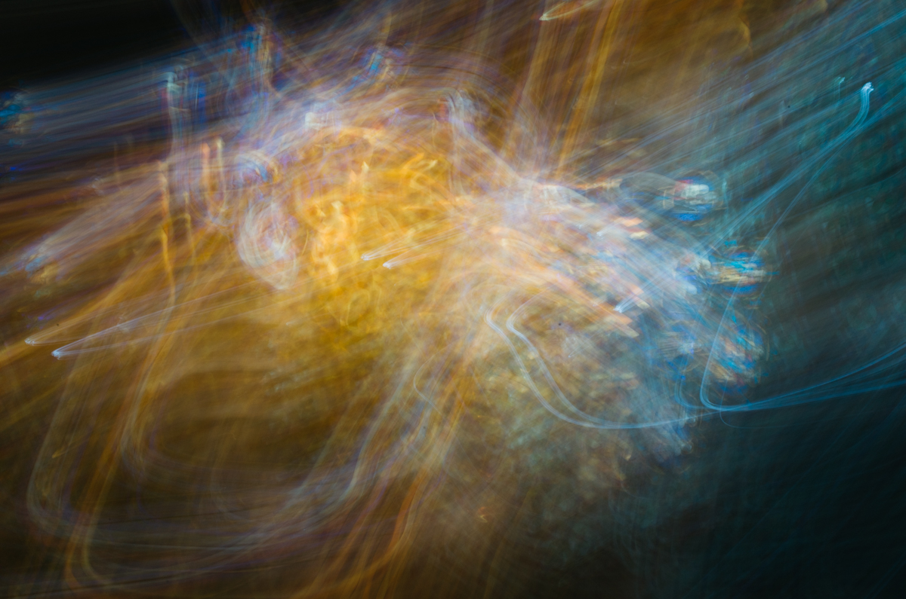
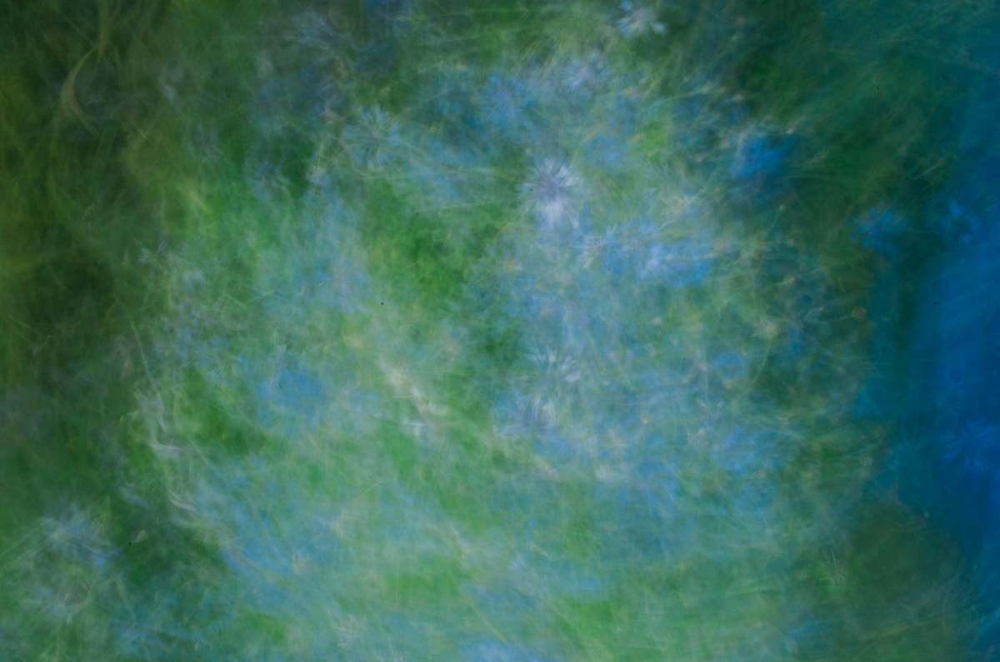
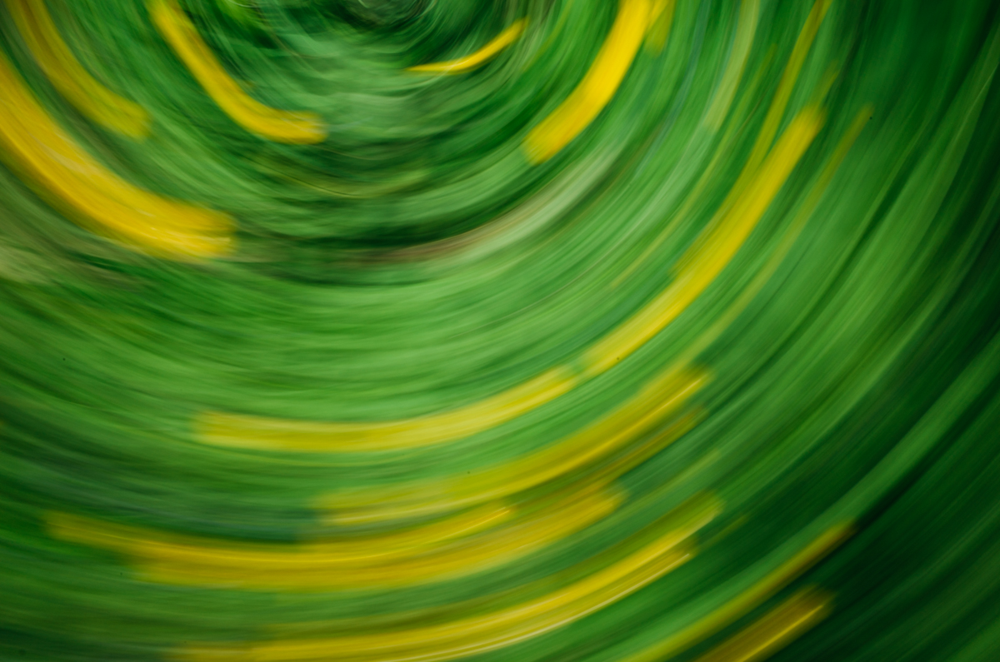
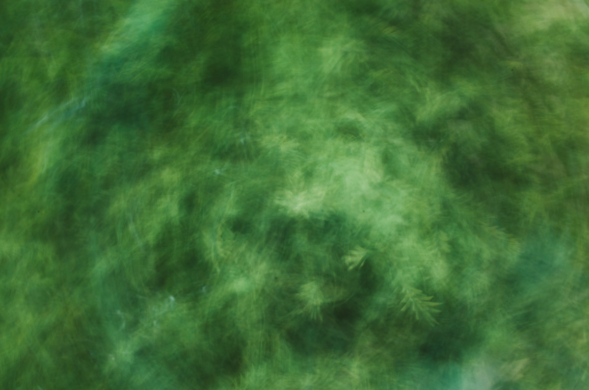
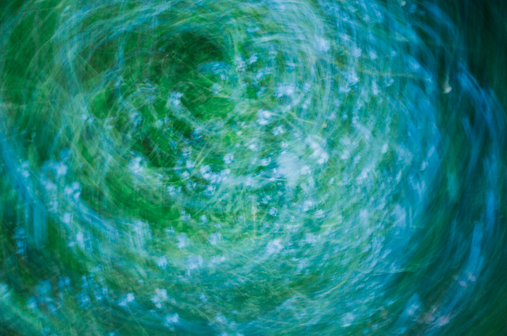
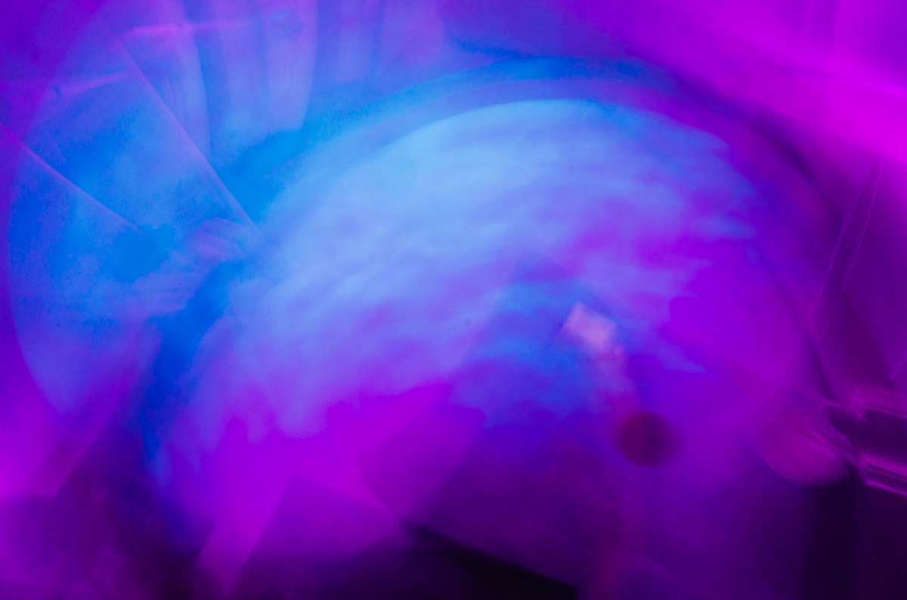
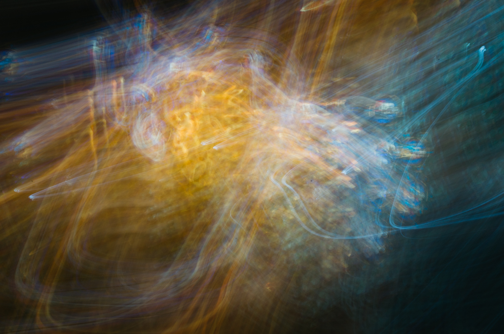
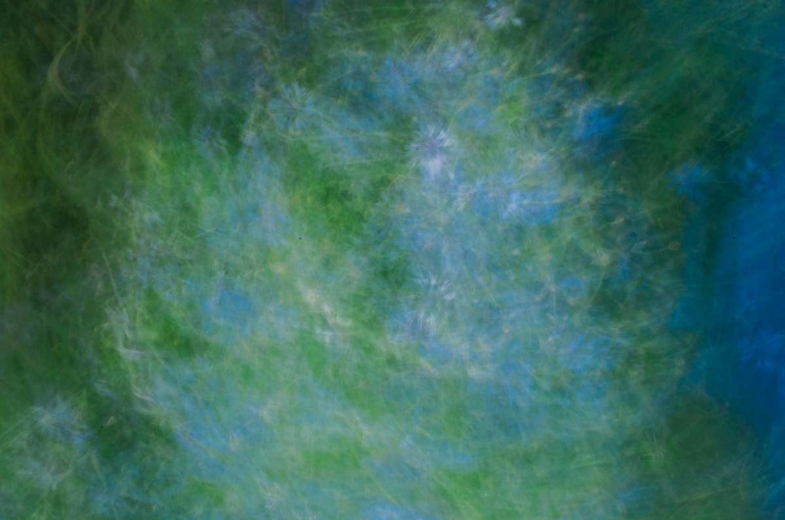
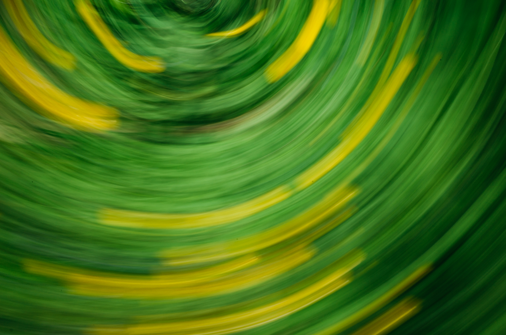
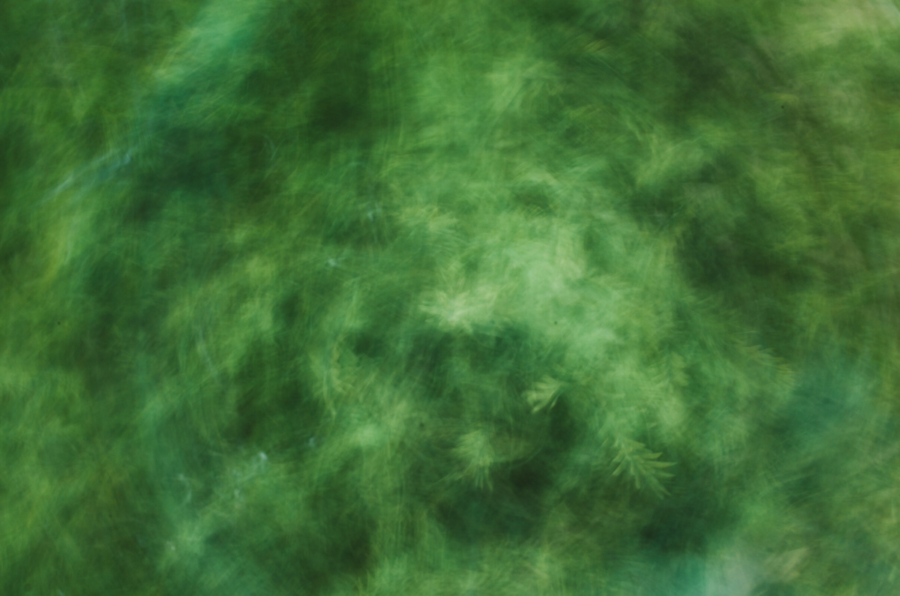
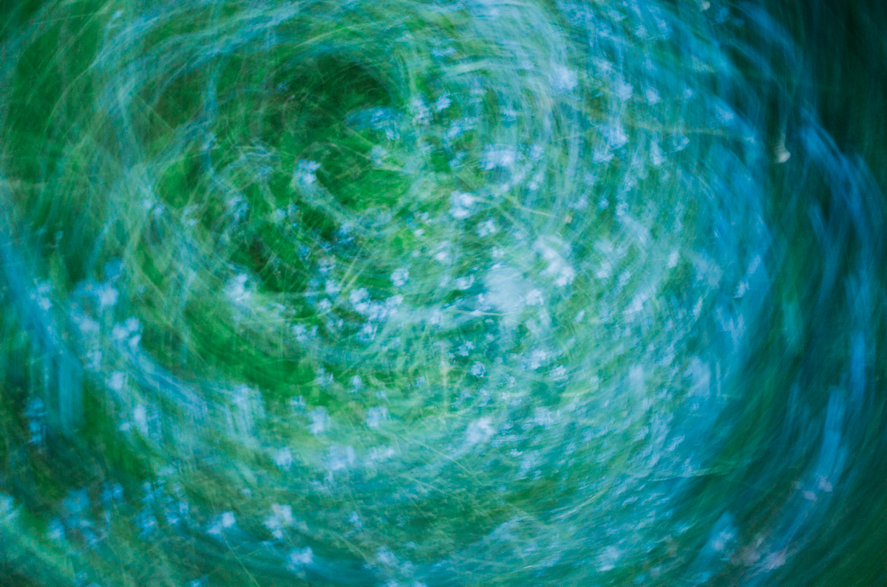
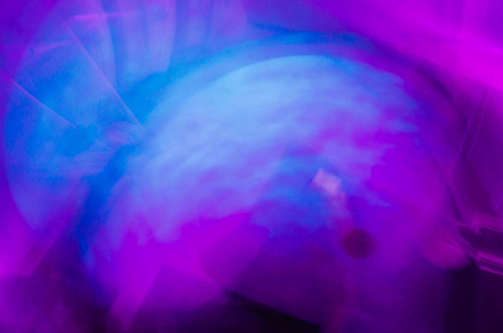
"Despite this variety, Abstract Expressionist paintings share several broad characteristics. They are basically abstract—i.e., they depict forms not drawn from the visible world. They emphasize free, spontaneous, and personal emotional expression, and they exercise considerable freedom of technique and execution to attain this goal, with a particular emphasis laid on the exploitation of the variable physical character of paint to evoke expressive qualities (e.g., sensuousness, dynamism, violence, mystery, lyricism). They show similar emphasis on the unstudied and intuitive application of that paint in a form of psychic improvisation akin to the automatism of the Surrealists, with a similar intent of expressing the force of the creative unconscious in art. They display the abandonment of conventionally structured composition built up out of discrete and segregable elements and their replacement with a single unified, undifferentiated field, network, or other image that exists in unstructured space. And finally, the paintings fill large canvases to give these aforementioned visual effects both monumentality and engrossing power."
Excerpt from Encyclopedia Britannica
(ongoing project)